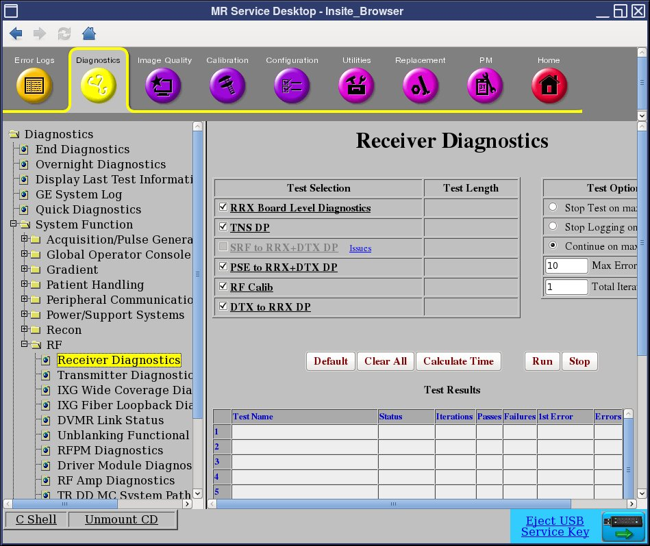
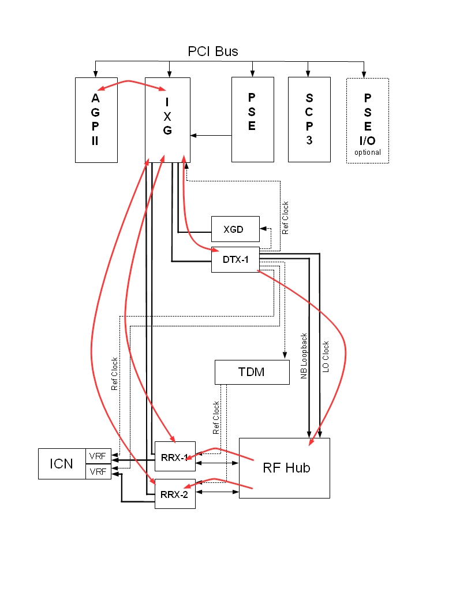

PSE to RRX + DTX Datapath Diagnostic
1 Disclaimer
Depending on your service agreement, not all service tools, diagnostics, and utilities referenced in this document may be accessible. Contact your sales person for information on available service license packages.
2 Diagnostic Description
2.1 Diagnostic Path
Diagnostics > System Function > RF > Receiver Diagnostics
Figure 1. Receiver Diagnostics

2.2 Purpose
The PSE to RRX + DTX Datapath Diagnostic tests the ability of the IXG to send sequence bus data to the DTX and RRX modules. All of the sequence bus data registers of the RRX and DTX modules are tested to ensure they capture the correct data from the sequence data stream. The AGP board runs the test.
2.3 Components Tested
Boards tested on standard systems:
-
IXG
-
DTX-1
-
RRX-1
-
RRX-2
For MNS systems, additional boards are tested:
-
DTX-2
-
Upconverter
-
ERF (if present)
2.4 Block Diagram
Figure 2. Datapath of 32-Channel System (without MNS Option)

If the system has the MNS option installed, the PCI bus may include an ERF board. In this configuration, RRX-1 and RRX-2 connect through the ERF board instead of the IXG board.
Figure 3. Datapath of 32-Channel System (with MNS Option)

2.5 Test Sequence
-
Click Calculate Time to get an estimate of the time it will take to run the selected diagnostic.
-
Click Run to initiate the test.
note:Do not change the Test Options settings from their default settings unless instructed to do so by a GE Healthcare engineer. These settings rarely need to be changed.
2.6 Expected Results
- Test Results
-
Diagnostic results display the test name with a status of PASS or FAIL. If you receive a FAIL status, click the error number in the 1st Error column to view error message details.
- Test Status
-
This window informs you of the progress of the test from the initial scan to the completed diagnostic.
2.7 Replacement Calibrations
If the RRX, IXG, or AGP board is replaced, no calibration is needed.
If the DTX-1 board is replaced, run these calibrations:
2.8 Finalization
Before scanning, perform a TPS reset.